Synthetic manuscript figures
Three training wells and two held-out test wells. Figures 1–2 are conceptual schematics; all other figures use generated data and computed predictions.
Figure 1: Field location and depth map (synthetic schematic)
Vector PDF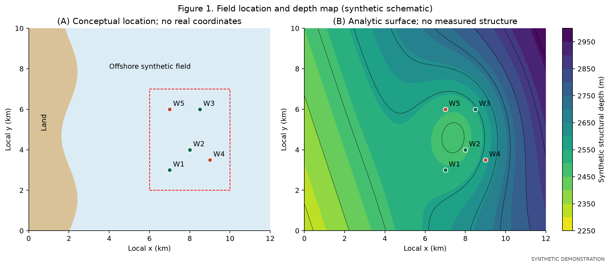
Figure 2: Stratigraphic context (conceptual schematic)
Vector PDF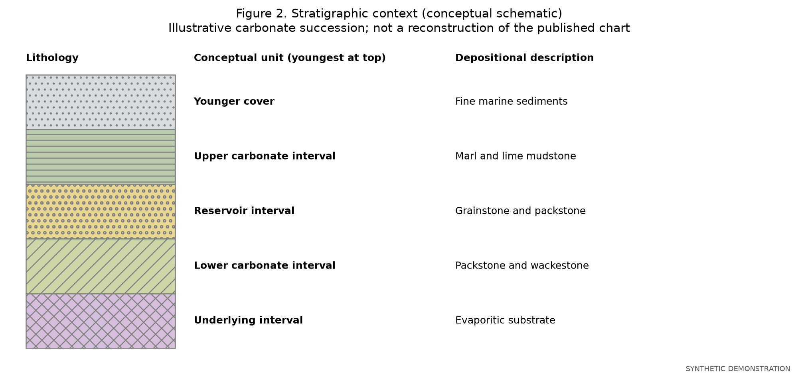
Figure 3: Well logs, facies and laboratory measurements
Vector PDF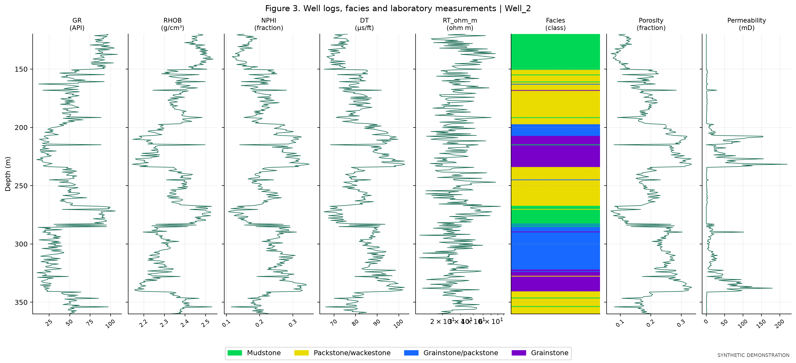
Figure 4: Observations per well
Vector PDF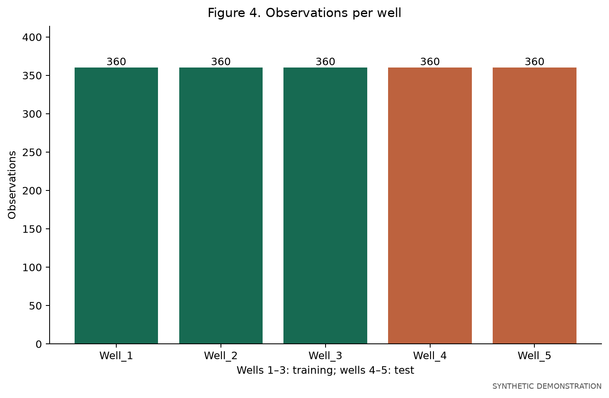
Figure 6: Facies frequency by well
Vector PDF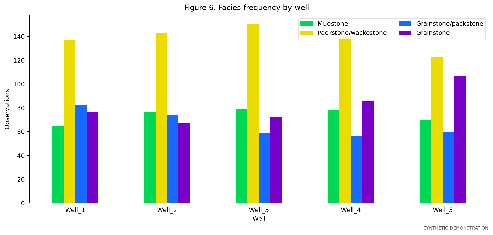
Figure 8: Neutron-density crossplot
Vector PDF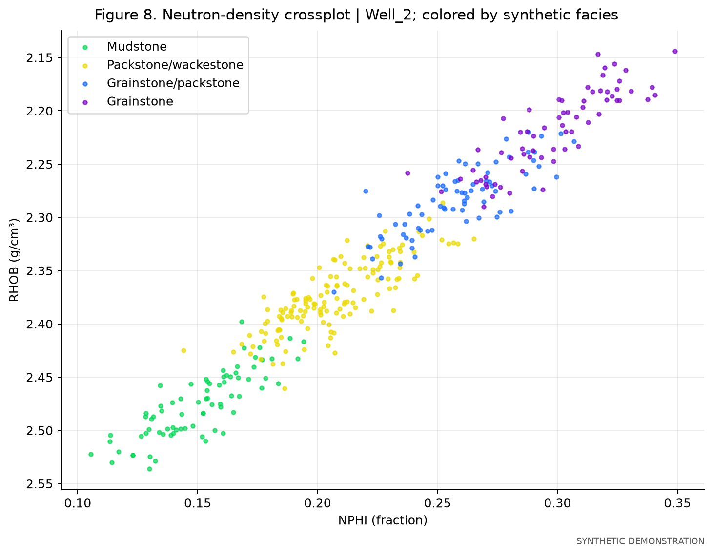
Figure 9: Predictor pairplot by facies
Vector PDF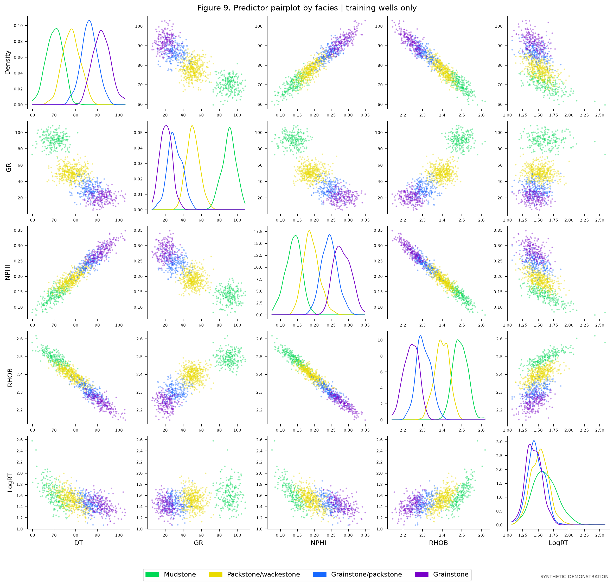
Figure 10: Covariance and Pearson correlation
Vector PDF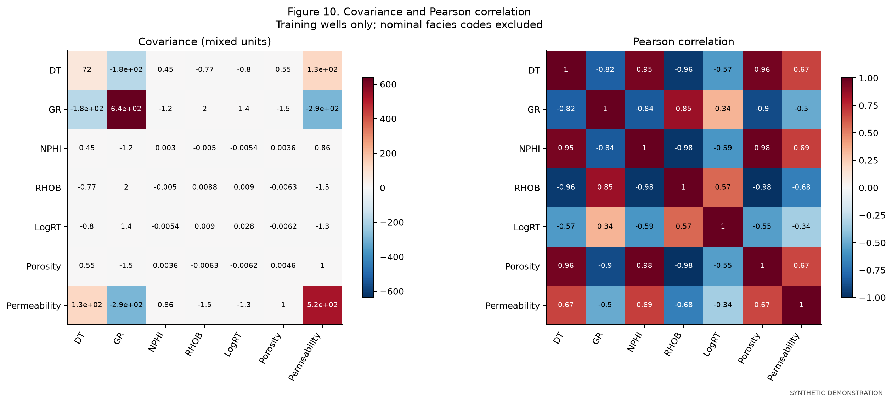
Figure 11: Development confusion matrices
Vector PDF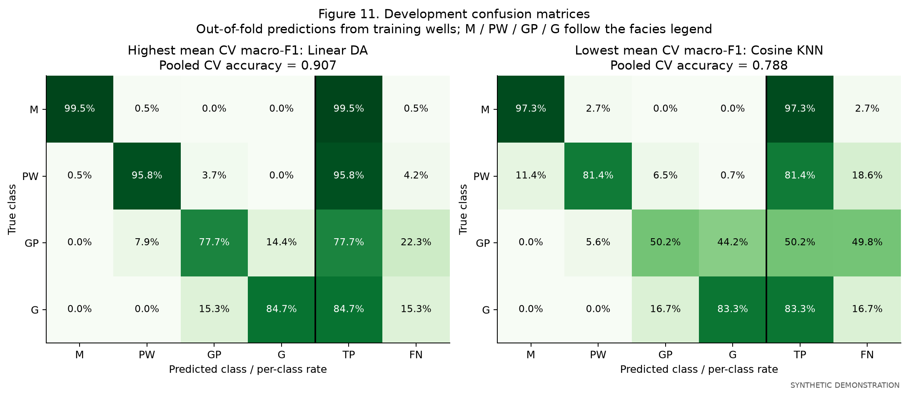
Figure 12: Facies model comparison
Vector PDF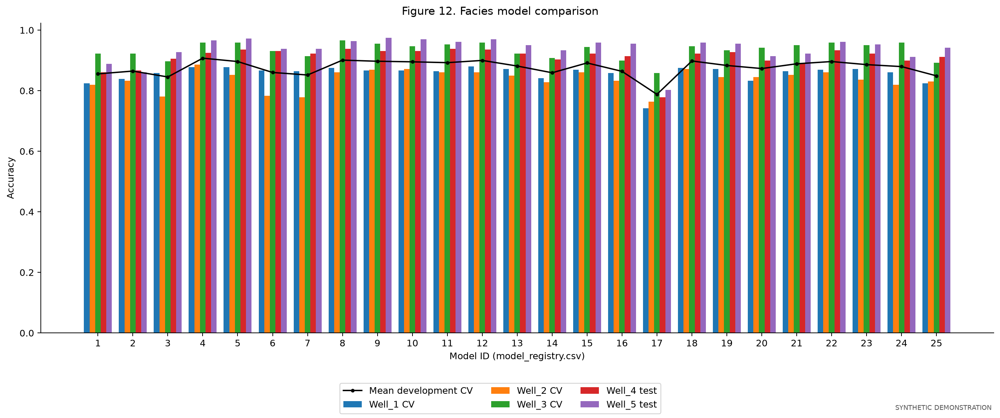
Figure 13: Facies depth tracks
Vector PDF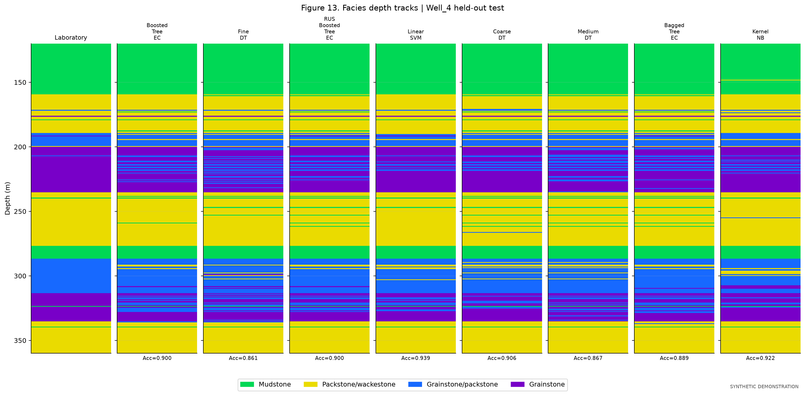
Figure 14: Porosity model point comparisons
Vector PDF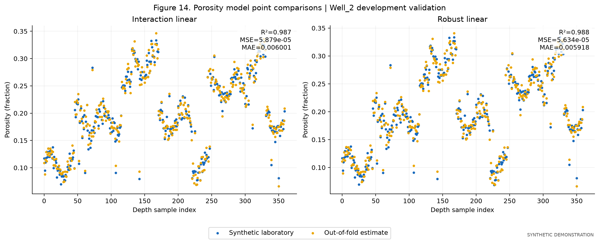
Figure 15: Porosity model comparison
Vector PDF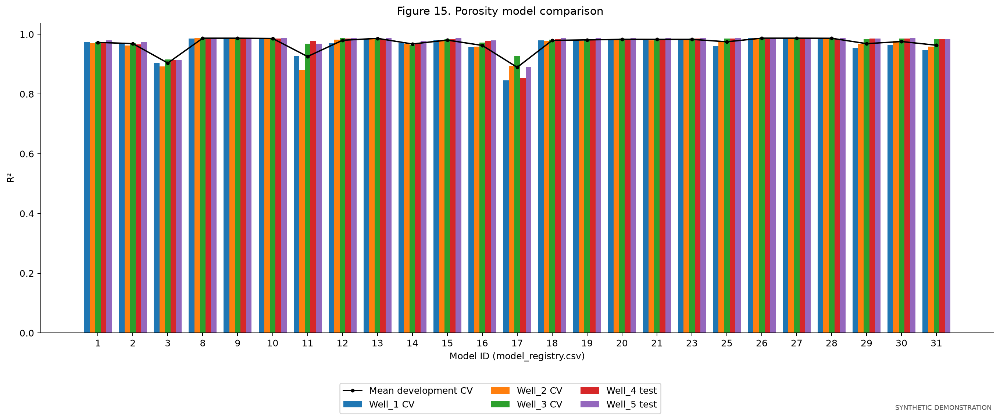
Figure 16: Porosity depth tracks
Vector PDF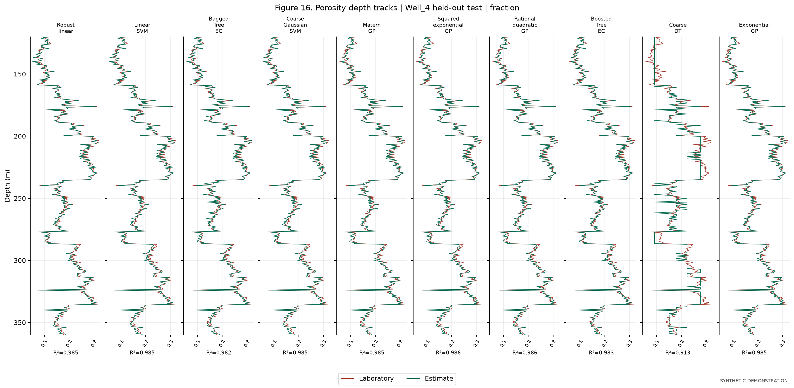
Figure 17: Permeability model point comparisons
Vector PDF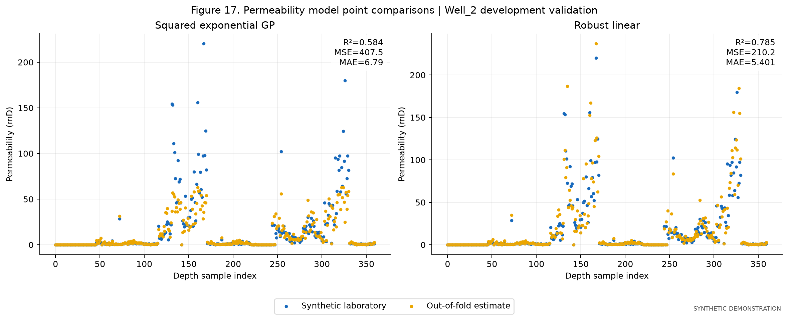
Figure 18: Permeability model comparison
Vector PDF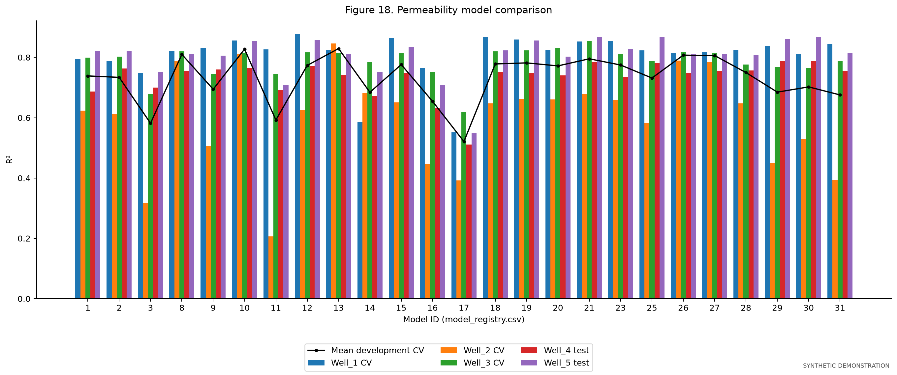
Figure 19: Permeability depth tracks
Vector PDF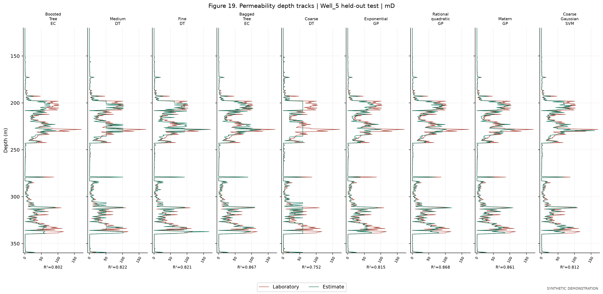